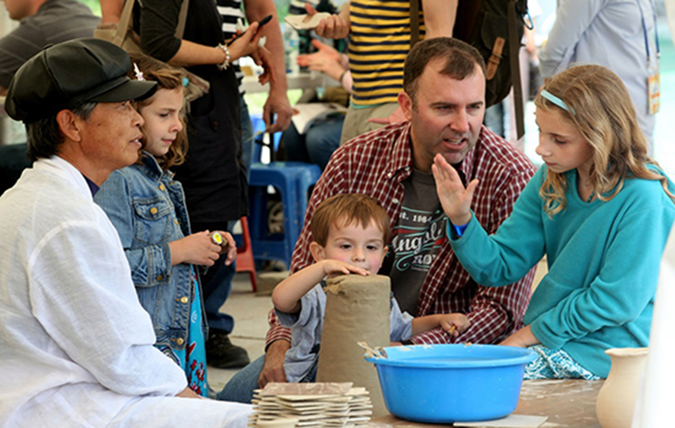

이천도자기축제
축제 갤러리
- 
축제 일정표
| time | 4.26(금) | 4.27(토) | 4.28(일) | 4.29(월) | 4.30(화) | 5.1(수) | 5.2(목) | 5.3(금) | 5.4(토) | 5.5(일) | 5.6(월) | 5.7(화) | 5.8(수) | 5.9(목) | 5.10(금) | 5.11(토) | 5.12(일) |
|---|---|---|---|---|---|---|---|---|---|---|---|---|---|---|---|---|---|
| 11:00 | 포크콘서트 | 포크콘서트 | 경기민요 | 행복한 오케스트라 |
국악퍼포먼스 | 해금연주 | 재즈 정호 콰르텟 |
전통 목악기 연주 |
버스킹공연 | 민요 | 포크콘서트 | ||||||
| 12:00 | 포크콘서트 | 포크콘서트 | 포크콘서트 | 포크콘서트 | |||||||||||||
| 13:00 | 포크콘서트 | 포크콘서트 | 다례시연 | 남도굿 | 버스킹공연 | 도자제작시연 | 째즈 정호 콰르텟 |
해금연주 | 전통 목악기 연주 |
버스킹공연 | 포크콘서트 | 포크콘서트 | |||||
| 14:00 | 다례제 | 포크콘서트 | 포크콘서트 | 경기민요 | 다례시연 | 해금연주 | 전통 목악기 연주 |
재즈 정호 콰르텟 |
도자제작시연 | 포크콘서트 | 포크콘서트 | ||||||
| 15:00 | 경기민요 | 버스킹공연 | 해금연주 | 버스킹공연 | 도자제작시연 | 재즈 정호 콰르텟 |
버스킹공연 | 해금연주 | 경기민요 | 포크콘서트 | 포크콘서트 | ||||||
| 16:00 | 경기민요 | 버스킹공연 | 해금연주 | 재즈 정호 콰르텟 |
다례시연 | 버스킹공연 | 도자제작시연 | 포크콘서트 | 포크콘서트 | ||||||||
| 17:00 | 개막식 | 해금연주 | 버스킹공연 | 재즈 정호 콰르텟 |
경기민요 | 다례시연 | 버스킹공연 | 도자제작시연 | 해금연주 | ||||||||
| 18:00 | |||||||||||||||||
| 19:00 | SBS컬투쇼 녹화 |